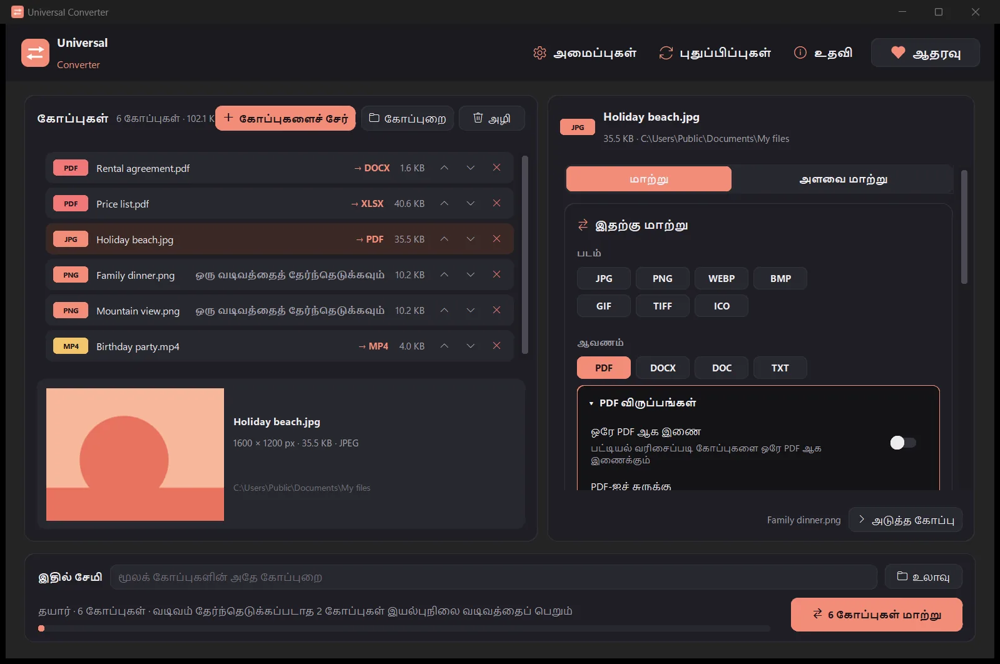
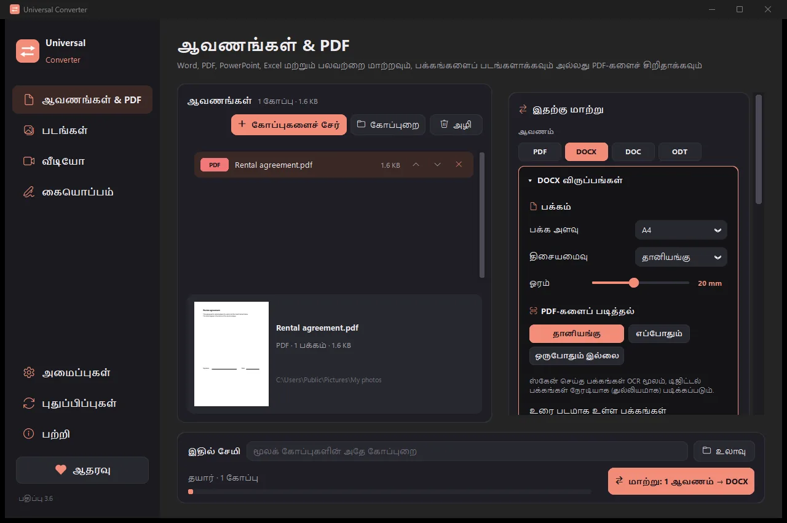
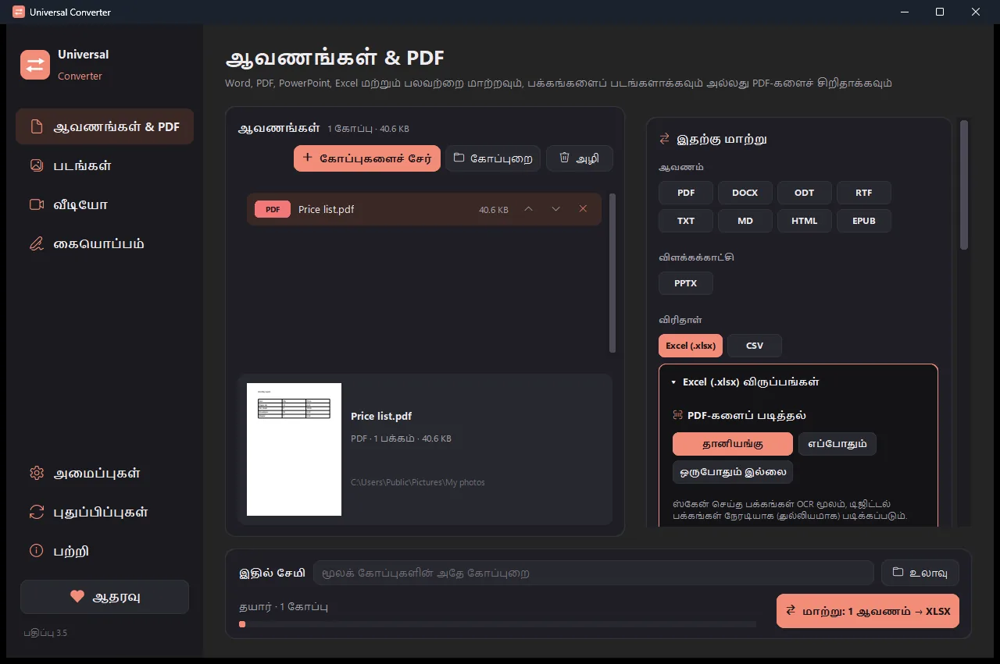
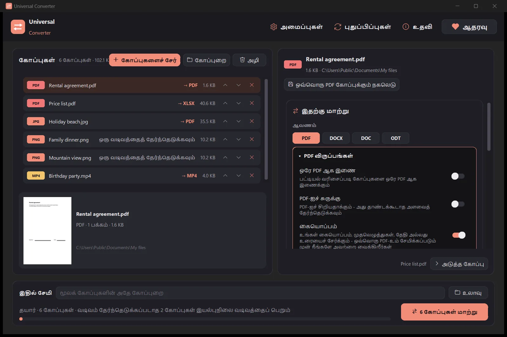

உங்கள் கோப்புகளை உங்கள் சொந்தச் சாதனத்திலேயே மாற்றுங்கள்
படங்கள், ஆவணங்கள், வீடியோ, ஒலி, PDF-கள், அட்டவணைகளை Excel-க்கு - அனைத்தும் ஒரே செயலியில். எதுவும் பதிவேற்றப்படாது: உங்கள் கோப்புகள் உங்கள் சாதனத்தை விட்டு வெளியேறாது.
நிறுவுவது, புதுப்பிப்பது எப்படி
- பதிவிறக்கிய .dmg-ஐத் திறந்து Universal Converter-ஐ Applications-க்கு இழுக்கவும்.
- செயலியைத் திறக்கவும். Apple-ஆல் கையொப்பமிடப்படாததால் முதல் முறை macOS அதைத் தடுக்கும்: Done என்பதைக் கிளிக் செய்யவும்.
- System Settings > Privacy & Security என்பதைத் திறந்து, கீழே உருட்டி, Open Anyway என்பதைக் கிளிக் செய்து கடவுச்சொல்லை உள்ளிடவும். இதை ஒருமுறை மட்டுமே செய்ய வேண்டும்.
புதுப்பிப்புகள்: செயலி முதலில் திறக்கும்போது நீங்கள் அனுமதித்தால், ஒவ்வொரு முறை தொடங்கும்போதும் புதிய பதிப்புகளைச் சரிபார்த்து, அவற்றின் டிஜிட்டல் கையொப்பத்தை உறுதிசெய்து, நீங்கள் தேர்வுசெய்யும்போது நிறுவும்.
நிறுவுவது, புதுப்பிப்பது எப்படி
- உங்கள் தொலைபேசியில் “Android-க்குப் பதிவிறக்கு” என்பதைத் தட்டவும்.
- பதிவிறக்கிய கோப்பைத் திறக்கவும். Android கேட்டால், உங்கள் உலாவி அல்லது கோப்பு மேலாளர் செயலிகளை நிறுவ அனுமதிக்கவும்.
- நிறுவு என்பதைத் தட்டவும்.
புதுப்பிப்புகள்: செயலி தோராயமாக நாளுக்கு ஒருமுறை சரிபார்த்து, புதிய பதிப்பு தயாரானதும் சொல்லும். அதை அதே வழியில் பதிவிறக்கி பழையதன் மேல் நிறுவவும்; உங்கள் அமைப்புகள் காக்கப்படும்.
நிறுவுவது, புதுப்பிப்பது எப்படி
- .AppImage கோப்பைப் பதிவிறக்குங்கள்.
- அதை இயக்கக்கூடியதாக்குங்கள்: வலது கிளிக் செய்து, Properties > Permissions-இல் நிரலாக இயக்க அனுமதியுங்கள் (அல்லது டெர்மினலில்: chmod +x Universal-Converter-*.AppImage).
- அதை இருமுறை கிளிக் செய்யுங்கள். எதுவும் நிறுவப்படாது: செயலி இந்த ஒரே கோப்புதான்.
புதுப்பிப்புகள்: முதல் முறை திறக்கும்போது அனுமதித்தால், ஒவ்வொரு தொடக்கத்திலும் புதிய பதிப்புகளைச் சரிபார்த்து, அவற்றின் டிஜிட்டல் கையொப்பத்தை உறுதிசெய்து, AppImage கோப்பை அதே இடத்தில் மாற்றும்.

தனிப்பட்டது
அனைத்தும் உங்கள் சாதனத்திலேயே இயங்கும். பதிவேற்றம் இல்லை, வரிசையில் காத்திருப்பு இல்லை, அளவு வரம்பு இல்லை.
இலவசம்
இலவசமாகப் பயன்படுத்தலாம் - விளம்பரங்கள், கணக்கு, நீர்க்குறி எதுவும் இல்லை.
34 மொழிகள்
தமிழ், ஆங்கிலம், கிரேக்கம், ஸ்பானிஷ், இத்தாலியன், ஜெர்மன், பிரெஞ்சு, போர்த்துகீசியம் (போர்ச்சுகல், பிரேசில்), போலிஷ், ரஷ்யன், அரபு, ஹீப்ரு, சீனம், ஜப்பானியம், கொரியன், ஆஃப்ரிகான்ஸ், யொருபா, ஹவுசா, இந்தி, இந்தோனேசியம், துருக்கியம், வியட்நாமியம், ஸ்வீடிஷ், டச்சு, டேனிஷ், உக்ரைனியன், செக், ருமேனியன், பல்கேரியன், நார்வேஜியன், மலாய், ஃபிலிப்பினோ, சுவாஹிலி.
ஒரே சாளரத்தில் ஐந்து கருவிகள்

ஆவணங்கள் & PDF
PDF, Word, ODT, RTF, TXT, Markdown, HTML, EPUB, PowerPoint, Excel இடையே மாற்றுங்கள். பக்கங்களைப் படங்களாக்குங்கள், பல கோப்புகளை ஒரே PDF ஆக இணையுங்கள். எழுத்துருக்கள், அளவுகள், நிறங்கள் காக்கப்படும். PDF-களை நீங்கள் தேர்ந்தெடுக்கும் அளவுக்குச் சிறிதாக்கலாம். ஸ்கேன்களும் நிரப்பிய படிவங்களும், பக்கத்தில் உள்ளபடியே அமைந்த, திருத்தக்கூடிய உரையாகவும் அட்டவணைகளாகவும் மாறும். வங்கி அறிக்கைகளில் உள்ளது போல கோடுகள் இல்லாத அட்டவணைகளும் உண்மையான அட்டவணைகளாக Word-க்குள் வருகின்றன; பழைய Word (.doc), PowerPoint (.ppt) கோப்புகளும் திறக்கும்.
படங்கள்
JPG, PNG, WEBP, TIFF, BMP, GIF, ICO இடையே மாற்றுங்கள். பிக்சல், சதவீதம் அல்லது கோப்பு அளவு மூலம் அளவை மாற்றுங்கள், படங்களை PDF அல்லது Word கோப்பாக இணையுங்கள், படங்களிலுள்ள உரையைப் படியுங்கள் (OCR). PDF-களையும் சேர்க்கலாம்: ஒவ்வொரு பக்கமும் ஒரு படமாகும்.

வீடியோ
MP4, MKV, WebM, MOV, AVI இடையே வீடியோக்களை மாற்றி, AV1, H.265, H.264 அல்லது VP9 மூலம் சுருக்குங்கள். வெட்டுதல், செதுக்கல், சுழற்றுதல், அளவு மாற்றம், GIF உருவாக்குதல், சட்டகங்களைப் படங்களாகச் சேமித்தல், அல்லது ஒலியை மட்டும் MP3, M4A, FLAC, WAV, OGG அல்லது Opus ஆக வைத்தல். பல வீடியோக்கள் இருந்தால், ஒவ்வொன்றுக்கும் தனி அமைப்புகள் இருக்கலாம். Android-இல்: MP4, MKV, WebM, MOV அல்லது GIF, அல்லது ஒலியை மட்டும் M4A, OGG அல்லது WAV ஆக; வெட்டுதல், செதுக்கல், சுழற்றுதல், அளவு மாற்றம், சட்டகங்களைச் சேமித்தல்.

Excel
PDF, ஸ்கேன்கள், புகைப்படங்களிலிருந்து அட்டவணைகளை Excel அல்லது CSV-க்கு எடுங்கள்: வங்கி அறிக்கைகள், விலைப்பட்டியல்கள், விலை விவரப் பட்டியல்கள். தமிழ், ஆங்கிலம், கிரேக்கம் மற்றும் 30-க்கும் மேற்பட்ட பிற மொழிகளைப் படிக்கும்.

கையொப்பம்
PDF-களில் கையொப்பமிட்டு படிவங்களை நிரப்புங்கள். உங்கள் பெயரைக் கையெழுத்துப் பாணியில் தட்டச்சு செய்யுங்கள், கையொப்பத்தை வரையுங்கள் அல்லது அதன் புகைப்படத்தைப் பயன்படுத்துங்கள். செயலி கையொப்ப வரிகளைத் தானே கண்டறியும், அல்லது கையொப்பம், முதலெழுத்துகள், தேதி, உரை அல்லது சரிக்குறிகள் வர வேண்டிய இடத்தில் நீங்கள் சொடுக்கலாம் அல்லது தட்டலாம். பல கோப்புகளில் ஒரே நேரத்தில் கையொப்பமிடுங்கள்; மூலக் கோப்புகள் மாறாமல் இருக்கும்.
- முடிந்தால் வீடியோவுக்கு உங்கள் வரைகலை அட்டையைப் பயன்படுத்தும்: பொதுவாக 5 முதல் 20 மடங்கு வேகம்.
- முழுக் கோப்புறைகளை இழுத்து விடுங்கள்: ஒவ்வொரு கோப்பும் ஒரே முறையில் மாற்றப்படும்.
- ஒரு கோப்பு வேறு தாவலுக்கு உரியது என்றால் சொல்லி, ஒரே கிளிக்கில் அங்கே கொண்டுசெல்லும்.
- புதிய பதிப்புகளைப் பற்றிச் சொல்லும்; Windows, Mac, Linux-இல் டிஜிட்டல் முறையில் உறுதிசெய்து அவற்றை உங்களுக்காக நிறுவலாம்.
- உங்கள் சாதனத்திற்கு ஏற்ற ஒளி, இருண்ட தோற்றம்.
இது எப்படி வேலை செய்கிறது
- Universal Converter-ஐத் திறந்து, இடதுபுறம் ஆவணங்கள் & PDF · படங்கள் · வீடியோ · கையொப்பம் என்பதைத் தேர்ந்தெடுக்கவும்.
- உங்கள் கோப்புகளை அல்லது ஒரு முழுக் கோப்புறையைச் சாளரத்திற்குள் இழுக்கவும், அல்லது “கோப்புகளைச் சேர்” என்பதைக் கிளிக் செய்யவும்.
- “மாற்று” என்பதைக் கிளிக் செய்யவும். புதிய கோப்புகள் மூலக் கோப்புகளுக்கு அருகில், அல்லது நீங்கள் தேர்ந்தெடுக்கும் கோப்புறையில் சேமிக்கப்படும்.
இது என்ன செய்யும்
- ஒரு PDF-ஐ Word ஆக மாற்றுங்கள்
- Word ஆவணங்களை PDF ஆக மாற்றுங்கள்
- பல கோப்புகளை ஒரே PDF ஆக இணையுங்கள்
- PDF-ஐ நீங்கள் தேர்ந்தெடுக்கும் அளவுக்குச் சுருக்குதல்
- PDF-ஐ 100 KB, 200 KB அல்லது ஆன்லைன் படிவம் கேட்கும் எந்த அளவுக்கும் சுருக்குங்கள்
- PDF பக்கங்களை JPG படங்களாக மாற்றுங்கள்
- ஸ்கேன் செய்த ஆவணத்தைத் திருத்தக்கூடிய Word கோப்பாக்குங்கள்
- JPG, PNG, WEBP மற்றும் பலவற்றுக்கு இடையே படங்களை மாற்றுங்கள்
- படங்களின் அளவை மாற்றுங்கள் அல்லது ஒரு கோப்பு அளவுக்குச் சுருக்குங்கள்
- புகைப்படம் அல்லது கையொப்பத்தை 20 KB, 50 KB அல்லது சரியான பிக்சலுக்கு மாற்றுங்கள்
- புகைப்படங்களை ஒரே PDF ஆக இணையுங்கள்
- JPG-ஐ 100 KB-க்குக் குறைவான PDF ஆக்குங்கள்
- ஒரு படத்திலிருந்து உரையை நகலெடுங்கள் (OCR)
- பதிவேற்றாமல் ஒரு வீடியோவைச் சுருக்குங்கள்
- MP4, MKV, WebM, MOV, AVI இடையே வீடியோக்களை மாற்றுங்கள்
- ஒரு வீடியோவின் ஒலியை MP3 ஆகச் சேமியுங்கள்
- ஒரு வீடியோவிலிருந்து GIF உருவாக்குங்கள்
- ஒரு PDF-இலிருந்து அட்டவணைகளை Excel-க்கு எடுங்கள்
- வங்கி அறிக்கை PDF-ஐ Excel ஆக மாற்றுங்கள்
- PDF விலைப்பட்டியல்களிலிருந்து அட்டவணைகளை Excel-க்கு எடுங்கள்
- PDF-இல் கையொப்பமிடுதல்
- PDF படிவத்தை நிரப்புதல்
கேள்விகள்
இது உண்மையிலேயே இலவசமா?
ஆம். Universal Converter இலவசமாகப் பயன்படுத்தலாம் - விளம்பரங்கள், கணக்கு, நேர வரம்பு எதுவும் இல்லை. இது உங்களுக்கு உதவினால், தன்னார்வப் பங்களிப்பு மூலம் அதன் மேம்பாட்டை ஆதரிக்கலாம், ஆனால் ஒருபோதும் கட்டாயமில்லை.
என் கோப்புகள் எங்காவது பதிவேற்றப்படுகின்றனவா?
இல்லை. ஒவ்வொரு மாற்றமும் உங்கள் சாதனத்திலேயே நடக்கும், எனவே இணைய இணைப்பு இல்லாமலும் வேலை செய்யும். புதுப்பிப்புகளைச் சரிபார்க்க, நீங்கள் தேர்ந்தெடுக்கும் உரை அறிதல் எழுத்துமுறைகளைப் பதிவிறக்க, நீங்கள் அனுமதித்தால் அநாமதேயப் பிழை அறிக்கைகளை அனுப்ப மட்டுமே செயலி இணையத்துடன் இணையும்.
பதிவிறக்குவது பாதுகாப்பானதா?
ஆம். ஒவ்வொரு பதிப்பின் Windows, Mac, Linux மற்றும் Android பதிவிறக்கங்களும் இந்தப் பக்கத்தில் வைக்கப்படுவதற்கு முன் VirusTotal-இல் சுமார் 60–70 வைரஸ் தடுப்பு இயந்திரங்களால் சோதிக்கப்படுகின்றன; ஒவ்வொரு பதிவிறக்கப் பொத்தானின் கீழுள்ள இணைப்பு அந்தக் கோப்பின் அறிக்கையைத் திறக்கும். செயலியில் விளம்பரங்கள் இல்லை, தனிப்பட்ட தரவையும் சேகரிக்காது; Microsoft Store பதிப்பை Microsoft-உம் சோதித்துக் கையொப்பமிடுகிறது.
Windows ஒரு SmartScreen எச்சரிக்கையைக் காட்டுகிறது. இது சாதாரணமா?
ஆம். நிறுவி இன்னும் குறியீட்டுச் சான்றிதழால் கையொப்பமிடப்படவில்லை, அதனால் Windows அதை அடையாளம் காணவில்லை. "மேலும் தகவல்" என்பதைத் தேர்ந்தெடுத்து, "எப்படியும் இயக்கு" என்பதைக் கிளிக் செய்யவும். அதன் பிறகான புதுப்பிப்புகளைச் செயலியே டிஜிட்டல் முறையில் உறுதிசெய்யும். அல்லது Microsoft Store-இலிருந்து நிறுவவும், அங்கே எச்சரிக்கை இல்லை.
Mac-இல் இதை எப்படித் திறப்பது?
பதிவிறக்கிய கோப்பைத் திறந்து Universal Converter-ஐ Applications-க்கு இழுக்கவும். செயலி Apple-ஆல் கையொப்பமிடப்படவில்லை, எனவே முதல் முறை திறக்கும்போது macOS அதைத் தடுக்கும்: Done என்பதைக் கிளிக் செய்து, System Settings > Privacy & Security என்பதைத் திறந்து, "Open Anyway" என்பதைக் கிளிக் செய்து கடவுச்சொல்லை உள்ளிடவும். இதை ஒருமுறை மட்டுமே செய்ய வேண்டும்.
Android-இல் இதை எப்படி நிறுவுவது?
தொலைபேசியில் APK-ஐப் பதிவிறக்கி, திறந்து, கேட்கும்போது நிறுவலை அனுமதியுங்கள் (Android 10 அல்லது புதியது). 34 மொழிகளும் உள்ளமைந்துள்ளன; செயலியின் அமைப்புகளில் ஒன்றைத் தேர்ந்தெடுங்கள். புதிய பதிப்பு வரும்போது செயலி தெரிவிக்கும்.
இது எந்த மொழிகளில் உள்ளது?
செயலி தமிழ், ஆங்கிலம், கிரேக்கம், ஸ்பானிஷ், இத்தாலியன், ஜெர்மன், பிரெஞ்சு, போர்த்துகீசியம் (போர்ச்சுகல், பிரேசில்), போலிஷ், ரஷ்யன், அரபு, ஹீப்ரு, சீனம், ஜப்பானியம், கொரியன், ஆஃப்ரிகான்ஸ், யொருபா, ஹவுசா, இந்தி, இந்தோனேசியம், துருக்கியம், வியட்நாமியம், ஸ்வீடிஷ், டச்சு, டேனிஷ், உக்ரைனியன், செக், ருமேனியன், பல்கேரியன், நார்வேஜியன், மலாய், ஃபிலிப்பினோ, சுவாஹிலி ஆகிய மொழிகளில் உள்ளது. நிறுவியில் அல்லது பின்னர் அமைப்புகளில் தேர்ந்தெடுக்கலாம்.